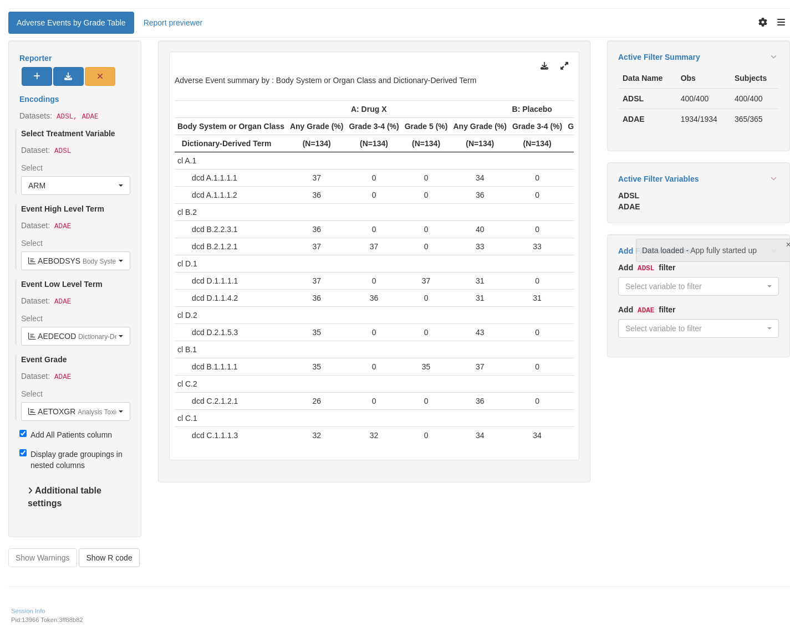

WebR is a tool allowing you to run R code in the web browser. Modify the code below and click run to see the results. Alternatively, copy the code and click here to open WebR in a new tab.
Note: User needs to specify the column index for filtering the table. The current example uses the “Any Grade” column for treatment A: Drug X with a filtering threshold at 0.37; AEs reported in greater than 37% of patients in treatment A: Drug X are shown. This can be changed by varying the parameter values in the has_fraction_in_cols function.
A: Drug X B: Placebo C: Combination
MedDRA System Organ Class Any Grade (%) Grade 3-4 (%) Grade 5 (%) Any Grade (%) Grade 3-4 (%) Grade 5 (%) Any Grade (%) Grade 3-4 (%) Grade 5 (%)
MedDRA Preferred Term (N=134) (N=134) (N=134) (N=134) (N=134) (N=134) (N=132) (N=132) (N=132)
———————————————————————————————————————————————————————————————————————————————————————————————————————————————————————————————————————————————————————————————————
cl A.1
dcd A.1.1.1.1 37 0 0 34 0 0 48 0 0
cl D.1
dcd D.1.1.1.1 37 0 37 31 0 31 39 0 39
Experimental use!
WebR is a tool allowing you to run R code in the web browser. Modify the code below and click run to see the results. Alternatively, copy the code and click here to open WebR in a new tab.
Note: User needs to specify the column index for filtering the table. The current example uses column indices 1, 4, and 7 with a filtering threshold at 0.40 to demonstrate the filtering ability; AEs reported in greater than 40% of patients are shown. This can be changed by varying the parameter values in the has_fraction_in_any_col function.
WebR is a tool allowing you to run R code in the web browser. Modify the code below and click run to see the results. Alternatively, copy the code and click here to open WebR in a new tab.
Note: User needs to specify the column index for filtering the table. The current example uses column indices 1, 4, and 7 to filter for AEs reported in \(\geq\) 30% of patients and AEs reported with a \(\geq\) 15% difference between treatments to demonstrate the filtering ability; this can be changed by varying the parameter values in the has_fraction_in_any_col and has_fractions_difference functions.
A: Drug X B: Placebo C: Combination
MedDRA System Organ Class Any Grade (%) Grade 3-4 (%) Grade 5 (%) Any Grade (%) Grade 3-4 (%) Grade 5 (%) Any Grade (%) Grade 3-4 (%) Grade 5 (%)
MedDRA Preferred Term (N=134) (N=134) (N=134) (N=134) (N=134) (N=134) (N=132) (N=132) (N=132)
———————————————————————————————————————————————————————————————————————————————————————————————————————————————————————————————————————————————————————————————————
cl C.2
dcd C.2.1.2.1 26 0 0 36 0 0 42 0 0
Experimental use!
WebR is a tool allowing you to run R code in the web browser. Modify the code below and click run to see the results. Alternatively, copy the code and click here to open WebR in a new tab.
Note: User needs to specify the column index for filtering the table. The current example filters using column indices 1, 4, and 7 to include AEs reported in \(\geq\) 40% of patients and using column indices 2, 5, and 8 to include grade 3-4 AEs reported in \(\geq\) 20% of patients. These thresholds are chosen to demonstrate the filtering ability; they can be changed by varying parameter values in the has_fraction_in_any_col function.
WebR is a tool allowing you to run R code in the web browser. Modify the code below and click run to see the results. Alternatively, copy the code and click here to open WebR in a new tab.
Note: User can specify/modify the grouping of grades, as shown in this example. In addition, the user needs to specify the column index for filtering the table. The current example uses the “Any Grade” columns with a filtering threshold at 0.40; this can be changed by varying the parameter values in the has_fraction_in_any_col function.
WebR is a tool allowing you to run R code in the web browser. Modify the code below and click run to see the results. Alternatively, copy the code and click here to open WebR in a new tab.
Note: User needs to specify the column index for filtering the table. The current example uses column indices 1, 5, and 9 with a filtering threshold at 0.40 to demonstrate the filtering ability; any grade AEs reported in greater than 40% of patients are shown. This can be changed by varying the parameter values in the has_fraction_in_any_col function.
WebR is a tool allowing you to run R code in the web browser. Modify the code below and click run to see the results. Alternatively, copy the code and click here to open WebR in a new tab.
Note: User needs to specify the column index for filtering the table. The current example uses column indices 1, 4, and 7 with a filtering threshold at 0.20 to demonstrate the filtering ability; any grade AEs (Preferred Terms Only) reported in greater than 20% of patients are shown. This can be changed by varying the parameter values in the has_fraction_in_any_col function.
WebR is a tool allowing you to run R code in the web browser. Modify the code below and click run to see the results. Alternatively, copy the code and click here to open WebR in a new tab.
library(teal.modules.clinical)## Data reproducible codedata <-teal_data()data <-within(data, { ADSL <- random.cdisc.data::cadsl ADAE <- random.cdisc.data::cadae})datanames <-c("ADSL", "ADAE")datanames(data) <- datanamesjoin_keys(data) <- default_cdisc_join_keys[datanames]## Reusable Configuration For ModulesADAE <- data[["ADAE"]]## Setup Appapp <-init(data = data,modules =modules(tm_t_events_by_grade(label ="Adverse Events by Grade Table",dataname ="ADAE",arm_var =choices_selected(c("ARM", "ARMCD"), "ARM"),col_by_grade =TRUE,llt =choices_selected(choices =variable_choices(ADAE, c("AETERM", "AEDECOD")),selected =c("AEDECOD") ),hlt =choices_selected(choices =variable_choices(ADAE, c("AEBODSYS", "AESOC")),selected ="AEBODSYS" ),grade =choices_selected(choices =variable_choices(ADAE, c("AETOXGR", "AESEV")),selected ="AETOXGR" ),# List of column groups for grades used when `col_by_grade` = TRUE.grading_groups =list(`Any Grade (%)`=c("1", "2", "3", "4", "5"),`Grade 3-4 (%)`=c("3", "4"),`Grade 5 (%)`="5" ) ) ))shinyApp(app$ui, app$server)

Experimental use!
shinylive allow you to modify to run shiny application entirely in the web browser. Modify the code below and click re-run the app to see the results. The performance is slighly worse and some of the features (e.g. downloading) might not work at all.
#| '!! shinylive warning !!': |#| shinylive does not work in self-contained HTML documents.#| Please set `embed-resources: false` in your metadata.#| standalone: true#| viewerHeight: 800#| editorHeight: 200#| components: [viewer, editor]#| layout: vertical# -- WEBR HELPERS --options(webr_pkg_repos = c("r-universe" = "https://insightsengineering.r-universe.dev", getOption("webr_pkg_repos")))# -- APP CODE --library(teal.modules.clinical)## Data reproducible codedata <- teal_data()data <- within(data, { ADSL <- random.cdisc.data::cadsl ADAE <- random.cdisc.data::cadae})datanames <- c("ADSL", "ADAE")datanames(data) <- datanamesjoin_keys(data) <- default_cdisc_join_keys[datanames]## Reusable Configuration For ModulesADAE <- data[["ADAE"]]## Setup Appapp <- init( data = data, modules = modules( tm_t_events_by_grade( label = "Adverse Events by Grade Table", dataname = "ADAE", arm_var = choices_selected(c("ARM", "ARMCD"), "ARM"), col_by_grade = TRUE, llt = choices_selected( choices = variable_choices(ADAE, c("AETERM", "AEDECOD")), selected = c("AEDECOD") ), hlt = choices_selected( choices = variable_choices(ADAE, c("AEBODSYS", "AESOC")), selected = "AEBODSYS" ), grade = choices_selected( choices = variable_choices(ADAE, c("AETOXGR", "AESEV")), selected = "AETOXGR" ), # List of column groups for grades used when `col_by_grade` = TRUE. grading_groups = list( `Any Grade (%)` = c("1", "2", "3", "4", "5"), `Grade 3-4 (%)` = c("3", "4"), `Grade 5 (%)` = "5" ) ) ))shinyApp(app$ui, app$server)